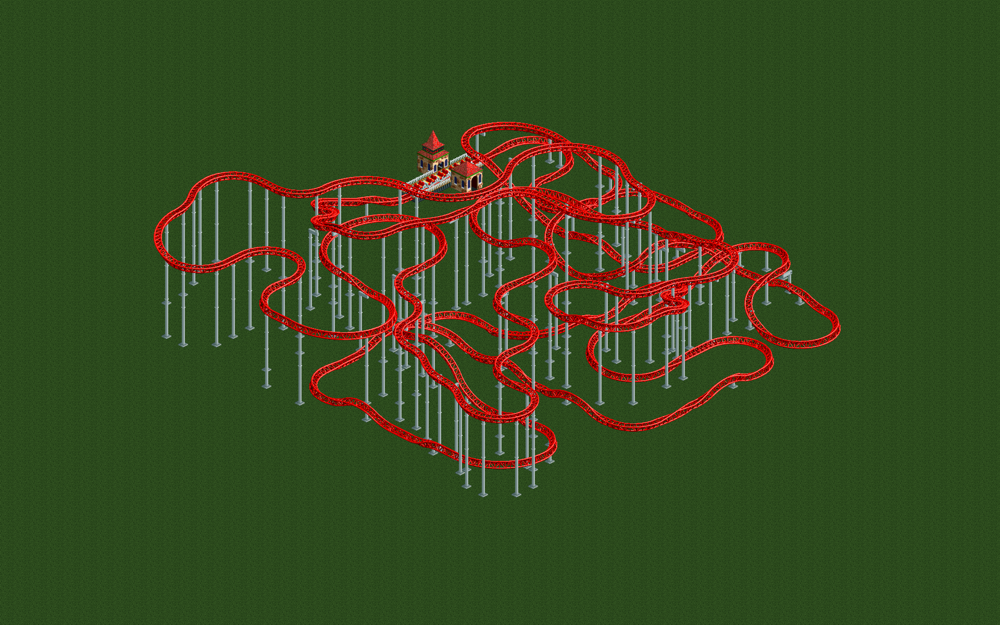
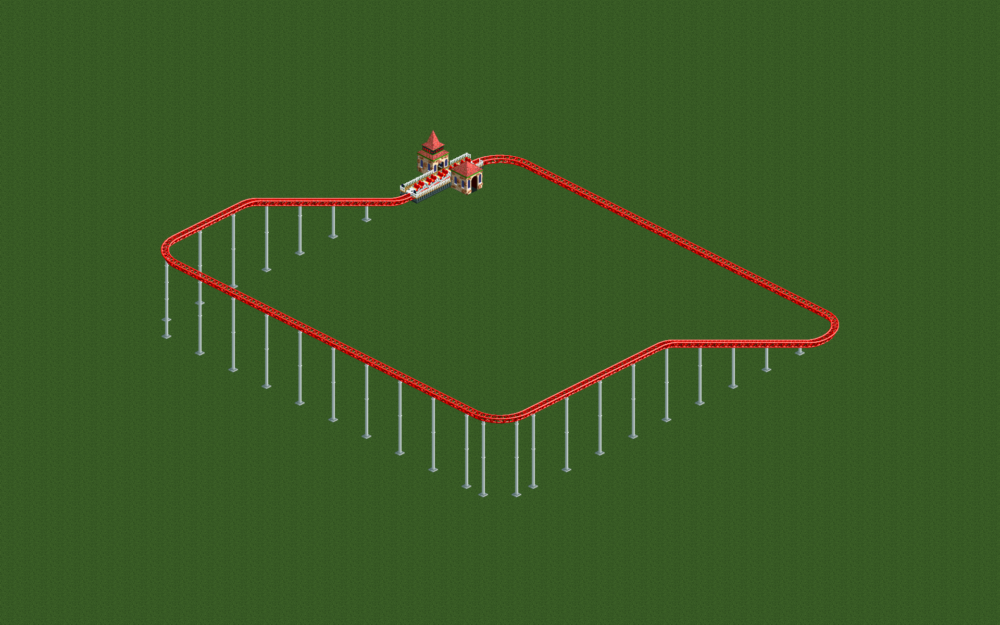
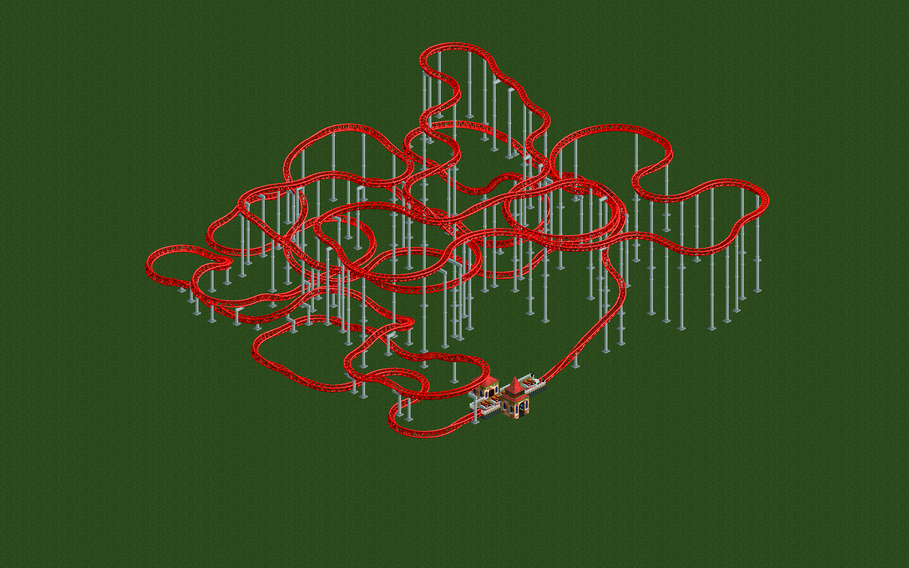

<title>닫힌 회로 코스터 탐색</title>
<meta name="claude:viewport-fit-sides" content="cover">
<link rel="preconnect" href="https://fonts.googleapis.com">
<link rel="preconnect" href="https://fonts.gstatic.com" crossorigin>
<link rel="stylesheet" href="https://fonts.googleapis.com/css2?family=IBM+Plex+Mono:wght@400;600&family=IBM+Plex+Sans+KR:wght@400;600;700&display=swap">
<style>
/* Layout: one reading column; a ride-window style rating readout opens the page, then evidence top to bottom. */
:root {
  --bg: #f6f7f3;
  --panel: #ffffff;
  --ink: #1b1f1a;
  --ink-2: #4b5248;
  --ink-3: #7a8276;
  --rule: #dfe3da;
  --grass: #2f5a23;
  --track: #c8312c;
  --series-1: #2a78d6;
  --series-2: #eb6834;
  --good: #1f7a3a;
  --font-body: "IBM Plex Sans KR", "Apple SD Gothic Neo", "Malgun Gothic", "Noto Sans KR", system-ui, sans-serif;
  --font-data: "IBM Plex Mono", ui-monospace, "SFMono-Regular", Menlo, monospace;
}
@media (prefers-color-scheme: dark) {
  :root:not([data-theme="light"]) {
    --bg: #141713; --panel: #1c201b; --ink: #ecefe8; --ink-2: #bfc6ba; --ink-3: #8d9688; --rule: #30362e;
    --grass: #7fb26b; --track: #ff6b5e; --series-1: #3987e5; --series-2: #d95926; --good: #58c27a;
    color-scheme: dark;
  }
}
:root[data-theme="dark"] {
  --bg: #141713; --panel: #1c201b; --ink: #ecefe8; --ink-2: #bfc6ba; --ink-3: #8d9688; --rule: #30362e;
  --grass: #7fb26b; --track: #ff6b5e; --series-1: #3987e5; --series-2: #d95926; --good: #58c27a;
  color-scheme: dark;
}
* { box-sizing: border-box; }
body {
  background: var(--bg); color: var(--ink); font-family: var(--font-body); font-size: 16px; line-height: 1.65;
  padding-left: max(16px, env(safe-area-inset-left, 0px)); padding-right: max(16px, env(safe-area-inset-right, 0px));
  padding-block: 40px 72px;
}
main { max-width: 760px; margin: 0 auto; display: flex; flex-direction: column; gap: 56px; }
section { display: flex; flex-direction: column; gap: 16px; min-width: 0; }
h1, h2 { text-wrap: balance; margin: 0; line-height: 1.25; }
h1 { font-size: clamp(1.9rem, 4.8vw, 2.6rem); font-weight: 700; letter-spacing: -0.01em; }
h2 { font-size: 1.35rem; font-weight: 700; }
p { margin: 0; max-width: 65ch; color: var(--ink-2); }
p strong { color: var(--ink); }
.eyebrow { font-family: var(--font-data); font-size: 0.78rem; letter-spacing: 0.08em; text-transform: uppercase; color: var(--grass); }
.lead { font-size: 1.08rem; color: var(--ink); }
code { font-family: var(--font-data); font-size: 0.86em; background: color-mix(in srgb, var(--rule) 55%, transparent); padding: 0.1em 0.35em; border-radius: 4px; overflow-wrap: anywhere; }

/* Ride window readout */
.readout { background: var(--panel); border: 1px solid var(--rule); border-radius: 10px; padding: 18px 20px; display: grid; grid-template-columns: repeat(3, minmax(0, 1fr)); gap: 12px; }
.meter { display: flex; flex-direction: column; gap: 4px; min-width: 0; }
.meter .label { font-size: 0.82rem; color: var(--ink-3); }
.meter .value { font-family: var(--font-data); font-size: clamp(1.6rem, 6vw, 2.2rem); font-weight: 600; font-variant-numeric: tabular-nums; line-height: 1.1; }
.meter .grade { font-size: 0.86rem; color: var(--ink-2); }
.meter .limit { font-family: var(--font-data); font-size: 0.76rem; color: var(--good); }
.shot { margin: 0; display: flex; flex-direction: column; gap: 8px; }
.shot img { width: 100%; height: auto; border-radius: 8px; display: block; background: #2a4a1f; }
.shot figcaption { font-size: 0.86rem; color: var(--ink-3); }
.pair { display: grid; grid-template-columns: repeat(2, minmax(0, 1fr)); gap: 14px; }

/* Tables */
.table-wrap { overflow-x: auto; border: 1px solid var(--rule); border-radius: 8px; background: var(--panel); }
table { border-collapse: collapse; width: 100%; font-size: 0.92rem; }
th, td { text-align: left; padding: 10px 12px; border-bottom: 1px solid var(--rule); vertical-align: top; }
tr:last-child td { border-bottom: 0; }
th { font-weight: 600; color: var(--ink-2); font-size: 0.82rem; white-space: nowrap; }
td.num { font-family: var(--font-data); font-variant-numeric: tabular-nums; white-space: nowrap; }
.pill { display: inline-flex; align-items: center; gap: 6px; font-size: 0.8rem; font-weight: 600; color: var(--good); white-space: nowrap; }
.pill::before { content: ""; width: 8px; height: 8px; border-radius: 50%; background: var(--good); }

/* Chart */
.chart { background: var(--panel); border: 1px solid var(--rule); border-radius: 10px; padding: 14px 12px 10px; position: relative; }
.legend { display: flex; flex-wrap: wrap; gap: 6px 18px; font-size: 0.86rem; color: var(--ink-2); padding: 0 4px 8px; }
.legend span { display: inline-flex; align-items: center; gap: 8px; }
.legend i { width: 18px; height: 2px; border-radius: 1px; display: inline-block; }
#plot { width: 100%; height: 320px; display: block; touch-action: pan-y; }
#plot text { font-family: var(--font-data); font-size: 11px; fill: var(--ink-3); }
#plot .lbl { fill: var(--ink-2); font-size: 11.5px; }
.tip { position: absolute; pointer-events: none; background: var(--panel); border: 1px solid var(--rule); border-radius: 6px; padding: 8px 10px; font-size: 0.8rem; line-height: 1.45; box-shadow: 0 4px 14px rgb(0 0 0 / 0.12); min-width: 170px; }
.tip b { font-family: var(--font-data); font-weight: 600; }
.tip .row { display: flex; justify-content: space-between; gap: 12px; }
details { font-size: 0.9rem; color: var(--ink-2); }
details summary { cursor: pointer; color: var(--ink-2); }
details summary:focus-visible { outline: 2px solid var(--series-1); outline-offset: 2px; border-radius: 4px; }
ol, ul { margin: 0; padding-left: 1.3em; color: var(--ink-2); max-width: 65ch; display: flex; flex-direction: column; gap: 6px; }
li strong { color: var(--ink); }
@media (max-width: 560px) {
  .readout { grid-template-columns: 1fr; }
  .pair { grid-template-columns: 1fr; }
  #plot { height: 260px; }
}
@media (prefers-reduced-motion: reduce) { * { transition: none !important; } }
</style>

<main>
  <header style="display:flex;flex-direction:column;gap:14px">
    <div class="eyebrow">OpenRCT2 · 24×24 타일 · 기가 코스터</div>
    <h1>닫힌 회로 코스터 탐색</h1>
    <p class="lead">가장 단순한 타원에서 출발해, 게임이 직접 시험 운행하고 매긴 레이팅만 보고 코스터를 고쳐 나갔다. 목표로 정한 <strong>흥미도 Very High(7.68 이상), 강도 High 이하, 멀미도 Medium 이하</strong>를 기가 코스터로 달성했다.</p>
  </header>

  <section aria-label="최종 레이팅">
    <div class="readout">
      <div class="meter"><span class="label">흥미도 Excitement</span><span class="value">8.18</span><span class="grade">Very High</span><span class="limit">목표 ≥ 7.68</span></div>
      <div class="meter"><span class="label">강도 Intensity</span><span class="value">5.92</span><span class="grade">High</span><span class="limit">목표 &lt; 7.68</span></div>
      <div class="meter"><span class="label">멀미도 Nausea</span><span class="value">4.24</span><span class="grade">Medium</span><span class="limit">목표 &lt; 5.12</span></div>
    </div>
    <figure class="shot">
      
      <figcaption>최종 트랙(198조각, 길이 1556 m, 탑승 168초). 새 게임 인스턴스에서 세 번 다시 평가해 같은 값을 얻었다.</figcaption>
    </figure>
  </section>

  <section>
    <h2>완료 기준</h2>
    <p>작업을 시작할 때 정한 다섯 가지 기준을 모두 충족했다.</p>
    <div class="table-wrap">
      <table>
        <thead><tr><th>기준</th><th>내용</th><th>근거</th><th>판정</th></tr></thead>
        <tbody>
          <tr><td>G1</td><td>게임 심판: 조각 목록을 주면 게임이 짓고 시험하고 레이팅을 돌려준다</td><td>인스턴스 14개로 초당 19.1회. 같은 트랙의 중복 평가 1,269건이 모두 같은 값</td><td><span class="pill">충족</span></td></tr>
          <tr><td>G2</td><td>구간 편집이 회로를 늘 닫힌 상태로 유지한다</td><td>평가 58,406회 중 게임이 "회로 미완성"으로 거부한 경우 0회</td><td><span class="pill">충족</span></td></tr>
          <tr><td>G3</td><td>E ≥ 7.68, I &lt; 7.68, N &lt; 5.12, 24×24 안</td><td>E 8.18 / I 5.92 / N 4.24, 타일 x 100–123, y 100–123</td><td><span class="pill">충족</span></td></tr>
          <tr><td>G4</td><td>모든 시도를 (편집 전, 편집, 편집 후 레이팅)으로 기록</td><td>7개 실행, 58,406행. 필수 필드와 연속 id 확인</td><td><span class="pill">충족</span></td></tr>
          <tr><td>G5</td><td>공원 파일, 스크린샷, 보고</td><td><code>results/giga_final/</code>, 이 페이지</td><td><span class="pill">충족</span></td></tr>
        </tbody>
      </table>
    </div>
  </section>

  <section>
    <h2>탐색 진행</h2>
    <p>목표 조건(강도 7.68 미만, 멀미도 5.12 미만)을 지키는 트랙 중 가장 높은 흥미도를 평가 횟수에 따라 그렸다. 목재 코스터는 5.89에서 멈췄고, 기가 코스터는 누적 27,058번째 평가에서 7.68을 처음 넘었다.</p>
    <div class="chart">
      <div class="legend" aria-hidden="true">
        <span><i style="background:var(--series-1)"></i>기가 코스터</span>
        <span><i style="background:var(--series-2)"></i>목재 코스터</span>
        <span><i style="background:var(--ink-3);height:0;border-top:2px dashed var(--ink-3)"></i>목표 7.68</span>
      </div>
      <svg id="plot" role="img" aria-label="평가 횟수에 따른 목표 조건 내 최고 흥미도. 기가 코스터는 1.36에서 8.18로, 목재 코스터는 0.60에서 5.89로 올랐다."></svg>
      <div class="tip" id="tip" hidden></div>
    </div>
    <details>
      <summary>표로 보기</summary>
      <div class="table-wrap" style="margin-top:10px">
        <table>
          <thead><tr><th>차종</th><th>구간</th><th>누적 평가</th><th>최고 E / I / N</th></tr></thead>
          <tbody id="milestones"></tbody>
        </table>
      </div>
    </details>
    <p>흥미도를 크게 움직인 결정은 세 가지였다.</p>
    <div class="table-wrap">
      <table>
        <thead><tr><th>결정</th><th>이유</th><th>흥미도 변화</th></tr></thead>
        <tbody>
          <tr><td>목재 → 기가 코스터</td><td>목재는 기본 강도 2.60이 강도 예산의 1/3을 먼저 쓴다. 기가는 기본 E 3.85, 기본 I 0.40</td><td class="num">5.89 → 7.38</td></tr>
          <tr><td>강도·멀미도 여유 보너스</td><td>상위 트랙의 72%가 횡 G 2.80 벌점선을 살짝 넘었다. 흥미도가 같으면 여유가 큰 트랙을 고르게 했다</td><td class="num">정체 해소에 기여</td></tr>
          <tr><td>교차 간격 48 → 24</td><td>자기 트랙과 맞닿거나 가까이 지나는 교차가 근접 보너스를 받는데, 사전 검사가 이를 막고 있었다</td><td class="num">7.38 → 8.18</td></tr>
        </tbody>
      </table>
    </div>
  </section>

  <section>
    <h2>시작과 결과</h2>
    <div class="pair">
      <figure class="shot"><figcaption>시작: 체인 리프트 언덕 하나짜리 타원. E 1.36 / I 2.58 / N 1.96</figcaption></figure>
      <figure class="shot"><figcaption>결과를 반대 방향에서 본 모습. E 8.18 / I 5.92 / N 4.24</figcaption></figure>
    </div>
    <p>최종 트랙은 영역을 꽉 채운 채 낮은 높이에서 촘촘히 교차한다. 게임 공식에서 강도 없이 흥미도만 올리는 항목(근접, 경사 회전, 에어타임, 탑승 시간)을 최대한 채운 결과다. 공식상으로는 흥미로운 코스터지만, 사람이 보기에는 실제 설계 미감과 거리가 있다.</p>
  </section>

  <section>
    <h2>방법</h2>
    <ol>
      <li><strong>닫힌 회로부터 깐다.</strong> 처음부터 시험 운행이 가능한 가장 단순한 타원에서 시작한다.</li>
      <li><strong>회로를 깨지 않는 편집만 한다.</strong> 트랙의 한 구간을, 진입과 진출의 위치·방향·경사·뱅크가 같은 다른 조각열로 바꾼다. 무작위로 몇 조각 걸은 뒤 4조각 이내의 정확한 완성 표로 남은 거리를 메운다.</li>
      <li><strong>게임이 채점한다.</strong> 자체 플러그인이 요청 한 번에 트랙을 짓고, 시험 운행하고, 레이팅을 돌려준다. 담금질이 결과를 보고 다음 편집을 고른다.</li>
    </ol>
    <p>레이팅 규칙은 OpenRCT2 v0.5.6 소스에서 전수 조사해 <code>docs/RATINGS.md</code>에 정리했다. 게임 허점(치트, 차종에 맞지 않는 열차)은 쓰지 않았다.</p>
  </section>

  <section>
    <h2>한계와 다음 단계</h2>
    <ul>
      <li><strong>조건이 하나뿐이다.</strong> 평평한 빈 땅, 영역 가장자리에 고정된 역, 탐색 시드 하나에서 얻은 결과다. 지형이 다르거나 영역이 좁을 때도 되는지는 아직 모른다.</li>
      <li><strong>목재 코스터는 목표에 닿지 못했다.</strong> 같은 방법으로 E 5.89 / I 6.93에서 멈췄다.</li>
      <li><strong>평지를 가정한 부분이 있다.</strong> 사전 검사는 지면 높이를 하나로 보고, 터널용 지형 작업은 하지 않는다.</li>
      <li><strong>다음 실험</strong>은 지형·장애물·영역 크기·역 위치를 바꿔 가며 같은 방법의 성공률을 재는 것이다. 루프를 쓸 수 있는 트위스터 코스터 비교도 진행 중이다.</li>
    </ul>
  </section>
</main>

<script>
const DATA = {"wooden": {"points": [[0, 0.6, 0.7, 0.41], [30, 1.24, 1.47, 0.86], [35, 2.49, 3.12, 1.8], [70, 2.51, 3.29, 1.85], [84, 5.04, 6.24, 3.61], [96, 5.07, 6.25, 3.61], [167, 5.14, 6.35, 3.69], [175, 5.15, 6.37, 3.7], [214, 5.16, 6.37, 3.7], [227, 5.24, 6.47, 3.79], [289, 5.25, 6.55, 3.86], [303, 5.27, 6.51, 3.85], [387, 5.31, 6.61, 3.93], [408, 5.35, 6.71, 3.93], [556, 5.39, 6.82, 4.02], [574, 5.4, 6.82, 4.02], [589, 5.41, 6.82, 4.02], [733, 5.42, 6.82, 4.02], [882, 5.43, 6.82, 4.03], [1275, 5.48, 6.63, 4.0], [1337, 5.49, 6.52, 3.94], [1424, 5.5, 6.53, 3.95], [1457, 5.52, 6.52, 3.95], [1500, 5.57, 6.52, 3.95], [1547, 5.58, 6.54, 3.97], [2114, 5.61, 6.63, 4.02], [2178, 5.64, 6.64, 4.0], [2347, 5.66, 6.74, 4.08], [2371, 5.68, 6.74, 4.08], [2396, 5.7, 6.73, 4.08], [2870, 5.71, 6.73, 4.1], [2880, 5.74, 6.82, 4.14], [3843, 5.75, 6.83, 4.14], [3907, 5.76, 6.82, 4.14], [4155, 5.77, 6.83, 4.14], [4615, 5.78, 6.92, 4.2], [4664, 5.79, 6.93, 4.22], [4816, 5.89, 6.93, 4.22]], "end": 8309, "phases": [[0, "\ub2f4\uae08\uc9c8"], [4817, "MAP-Elites"]]}, "giga": {"points": [[0, 1.36, 2.58, 1.96], [4, 5.51, 5.35, 3.45], [16, 5.61, 5.75, 3.63], [30, 5.68, 5.95, 3.77], [55, 5.69, 5.85, 3.72], [57, 5.73, 5.95, 3.79], [58, 5.74, 5.85, 3.74], [60, 5.75, 5.94, 3.79], [88, 5.82, 6.04, 3.87], [95, 5.83, 6.04, 3.88], [106, 5.93, 5.88, 3.79], [129, 6.01, 5.95, 3.88], [150, 6.08, 6.05, 3.95], [232, 6.15, 6.16, 4.03], [300, 6.16, 6.2, 4.05], [354, 6.18, 6.2, 4.05], [896, 6.26, 6.31, 4.12], [1293, 6.29, 6.41, 4.2], [1413, 6.32, 6.42, 4.21], [1916, 6.33, 6.42, 4.22], [2087, 6.36, 6.43, 4.23], [2151, 6.37, 4.61, 2.67], [2217, 6.39, 4.66, 2.68], [3697, 6.4, 5.27, 3.11], [3766, 6.42, 6.99, 4.6], [3809, 6.46, 6.89, 4.54], [3868, 6.47, 6.9, 4.54], [3870, 6.48, 7.01, 4.63], [3887, 6.5, 6.92, 4.54], [3946, 6.54, 6.74, 4.65], [3950, 6.56, 5.02, 3.27], [3978, 6.61, 5.03, 3.7], [4052, 6.63, 5.05, 3.7], [4123, 6.66, 4.92, 3.51], [4316, 6.69, 5.02, 3.31], [4431, 6.71, 5.03, 3.47], [4565, 6.72, 5.11, 3.26], [4711, 6.73, 5.1, 3.28], [4831, 6.74, 6.92, 5.08], [5371, 6.82, 5.15, 3.58], [5386, 6.85, 6.93, 4.86], [5435, 6.89, 7.03, 5.08], [5569, 6.9, 7.06, 5.11], [5687, 6.92, 7.03, 5.09], [6180, 6.98, 7.12, 5.1], [6973, 6.99, 7.07, 5.07], [6975, 7.0, 7.07, 5.07], [7354, 7.01, 7.07, 5.07], [12012, 7.02, 5.28, 3.81], [12017, 7.03, 5.27, 3.81], [12098, 7.04, 5.28, 3.82], [12108, 7.05, 5.28, 3.84], [12129, 7.06, 5.37, 3.76], [12146, 7.07, 5.29, 3.85], [12163, 7.08, 5.29, 3.85], [12178, 7.1, 5.29, 3.86], [12200, 7.11, 5.29, 3.86], [12312, 7.12, 5.3, 3.75], [12358, 7.13, 5.3, 3.73], [12928, 7.14, 5.39, 3.82], [12997, 7.15, 5.39, 3.83], [13259, 7.16, 5.5, 3.91], [13574, 7.17, 5.52, 3.93], [14527, 7.18, 5.62, 4.01], [14725, 7.19, 5.61, 4.01], [14747, 7.2, 5.45, 4.28], [14763, 7.22, 5.45, 4.28], [14950, 7.24, 4.97, 3.62], [14955, 7.25, 4.97, 3.63], [15301, 7.26, 5.06, 3.56], [15662, 7.27, 5.07, 3.84], [15747, 7.28, 5.07, 4.12], [16121, 7.29, 5.0, 4.05], [16388, 7.3, 4.98, 4.33], [16907, 7.31, 5.08, 4.4], [17098, 7.32, 5.07, 3.96], [17359, 7.33, 5.06, 3.81], [17914, 7.34, 5.11, 3.82], [18074, 7.35, 5.09, 3.84], [18347, 7.36, 5.19, 3.93], [18504, 7.37, 5.27, 3.73], [18525, 7.38, 5.25, 3.74], [25117, 7.4, 5.36, 3.83], [25192, 7.41, 5.37, 3.98], [25306, 7.51, 5.35, 3.97], [25389, 7.52, 5.36, 3.84], [26478, 7.53, 5.35, 3.8], [26875, 7.59, 5.48, 4.07], [26884, 7.64, 5.52, 4.27], [26923, 7.65, 5.52, 4.27], [26936, 7.66, 5.61, 4.34], [26968, 7.67, 5.4, 4.21], [27058, 7.68, 5.39, 4.23], [27189, 7.69, 5.47, 4.39], [27191, 7.7, 5.47, 4.39], [27204, 7.71, 5.47, 4.41], [27294, 7.72, 5.47, 4.39], [27636, 7.73, 5.58, 4.48], [27683, 7.74, 5.58, 4.79], [27714, 7.75, 5.74, 4.72], [27736, 7.76, 5.64, 4.65], [27925, 7.78, 5.65, 4.66], [28231, 7.79, 5.53, 4.46], [28318, 7.81, 5.64, 4.25], [28352, 7.82, 5.63, 4.24], [28374, 7.85, 5.63, 4.24], [28436, 7.86, 5.63, 4.24], [28549, 7.87, 5.64, 4.23], [29070, 7.88, 5.62, 4.21], [30594, 7.89, 5.51, 4.16], [32022, 7.9, 5.5, 4.16], [33506, 7.91, 5.48, 3.88], [33542, 7.92, 5.48, 3.89], [34417, 7.96, 5.62, 3.94], [34463, 7.97, 5.74, 4.16], [34543, 7.98, 5.74, 4.16], [34548, 7.99, 5.74, 4.17], [34558, 8.0, 5.64, 4.25], [34846, 8.01, 5.65, 4.26], [34944, 8.02, 5.64, 4.54], [35399, 8.03, 5.66, 4.7], [36635, 8.04, 5.76, 4.64], [36790, 8.05, 5.86, 4.58], [37179, 8.06, 5.85, 4.86], [37309, 8.07, 5.84, 4.99], [37396, 8.08, 5.84, 5.0], [38126, 8.09, 5.94, 5.09], [38552, 8.13, 5.95, 4.49], [38574, 8.14, 5.96, 4.51], [40977, 8.15, 5.85, 4.3], [41013, 8.16, 5.93, 4.36], [41559, 8.17, 5.83, 4.3], [42594, 8.18, 5.93, 4.38]], "end": 47631, "phases": [[0, "\ub2f4\uae08\uc9c8"], [19349, "\uc774\uc5b4\uc11c (slack)"], [25034, "\uac04\uaca9 24"]]}};
const svg = document.getElementById('plot');
const tip = document.getElementById('tip');
const NS = 'http://www.w3.org/2000/svg';
const GOAL = 7.68;
const XMAX = 48000, YMAX = 9;
const series = [
  { key: 'giga', name: '기가 코스터', color: 'var(--series-1)' },
  { key: 'wooden', name: '목재 코스터', color: 'var(--series-2)' },
];

function el(tag, attrs, parent) {
  const n = document.createElementNS(NS, tag);
  for (const k in attrs) n.setAttribute(k, attrs[k]);
  if (parent) parent.appendChild(n);
  return n;
}
function valueAt(points, x) {
  let v = null;
  for (const p of points) { if (p[0] <= x) v = p; else break; }
  return v;
}
let geom = null;

function draw() {
  const W = svg.clientWidth || 700, H = svg.clientHeight || 320;
  const m = { l: 36, r: 64, t: 10, b: 30 };
  const iw = W - m.l - m.r, ih = H - m.t - m.b;
  const sx = x => m.l + (x / XMAX) * iw;
  const sy = y => m.t + ih - (y / YMAX) * ih;
  geom = { W, H, m, iw, ih, sx, sy };
  svg.setAttribute('viewBox', `0 0 ${W} ${H}`);
  svg.replaceChildren();
  const grid = el('g', {}, svg);
  for (let y = 0; y <= YMAX; y += 3) {
    el('line', { x1: m.l, x2: m.l + iw, y1: sy(y), y2: sy(y), stroke: 'var(--rule)', 'stroke-width': 1 }, grid);
    el('text', { x: m.l - 8, y: sy(y) + 4, 'text-anchor': 'end' }, grid).textContent = y;
  }
  const xticks = W < 480 ? [0, 24000, 48000] : [0, 12000, 24000, 36000, 48000];
  for (const x of xticks) {
    el('text', { x: sx(x), y: m.t + ih + 20, 'text-anchor': x === 0 ? 'start' : (x === XMAX ? 'end' : 'middle') }, grid).textContent = x.toLocaleString('ko-KR');
  }
  // Giga phase boundaries
  for (const [x, label] of DATA.giga.phases.slice(1)) {
    el('line', { x1: sx(x), x2: sx(x), y1: m.t, y2: m.t + ih, stroke: 'var(--rule)', 'stroke-width': 1, 'stroke-dasharray': '2 3' }, grid);
    el('text', { x: sx(x) + 4, y: m.t + ih - 6, class: 'lbl' }, grid).textContent = label;
  }
  // Goal line
  el('line', { x1: m.l, x2: m.l + iw, y1: sy(GOAL), y2: sy(GOAL), stroke: 'var(--ink-3)', 'stroke-width': 1.5, 'stroke-dasharray': '6 4' }, svg);
  el('text', { x: m.l + iw + 6, y: sy(GOAL) + 4, class: 'lbl' }, svg).textContent = '7.68';
  for (const s of series) {
    const d = DATA[s.key];
    let path = '';
    d.points.forEach((p, i) => {
      const x = sx(p[0]), y = sy(p[1]);
      path += i === 0 ? `M${x},${y}` : `H${x}V${y}`;
    });
    path += `H${sx(d.end)}`;
    el('path', { d: path, fill: 'none', stroke: s.color, 'stroke-width': 2, 'stroke-linejoin': 'round' }, svg);
    const last = d.points[d.points.length - 1];
    el('circle', { cx: sx(d.end), cy: sy(last[1]), r: 4, fill: s.color, stroke: 'var(--panel)', 'stroke-width': 2 }, svg);
    el('text', { x: sx(d.end) + 8, y: sy(last[1]) + 4, class: 'lbl' }, svg).textContent = last[1].toFixed(2);
  }
  geom.cross = el('line', { y1: m.t, y2: m.t + ih, stroke: 'var(--ink-3)', 'stroke-width': 1, visibility: 'hidden' }, svg);
  el('rect', { x: m.l, y: m.t, width: iw, height: ih, fill: 'transparent' }, svg).addEventListener('pointermove', onMove);
  svg.lastChild.addEventListener('pointerleave', () => { tip.hidden = true; geom.cross.setAttribute('visibility', 'hidden'); });
}

function onMove(ev) {
  const rect = svg.getBoundingClientRect();
  const px = (ev.clientX - rect.left) * (geom.W / rect.width);
  const x = Math.max(0, Math.min(XMAX, ((px - geom.m.l) / geom.iw) * XMAX));
  geom.cross.setAttribute('x1', geom.sx(x)); geom.cross.setAttribute('x2', geom.sx(x));
  geom.cross.setAttribute('visibility', 'visible');
  let html = `<div>누적 평가 <b>${Math.round(x).toLocaleString('ko-KR')}</b></div>`;
  for (const s of series) {
    const d = DATA[s.key];
    if (x > d.end) continue;
    const p = valueAt(d.points, x);
    if (p) html += `<div class="row"><span style="color:${s.color}">●</span><span style="flex:1">${s.name}</span><b>E ${p[1].toFixed(2)}</b></div><div class="row" style="color:var(--ink-3)"><span></span><span>I ${p[2].toFixed(2)} · N ${p[3].toFixed(2)}</span></div>`;
  }
  tip.innerHTML = html;
  tip.hidden = false;
  const box = svg.parentElement.getBoundingClientRect();
  let left = ev.clientX - box.left + 14;
  if (left + 190 > box.width) left = ev.clientX - box.left - 200;
  tip.style.left = Math.max(4, left) + 'px';
  tip.style.top = (ev.clientY - box.top - 10) + 'px';
}

function milestones() {
  const body = document.getElementById('milestones');
  const rows = [];
  for (const s of series) {
    const d = DATA[s.key];
    d.phases.forEach(([start, label], i) => {
      const end = i + 1 < d.phases.length ? d.phases[i + 1][0] : d.end;
      const p = valueAt(d.points, end - 1);
      rows.push(`<tr><td>${s.name}</td><td>${label}</td><td class="num">${start.toLocaleString('ko-KR')}–${end.toLocaleString('ko-KR')}</td><td class="num">${p[1].toFixed(2)} / ${p[2].toFixed(2)} / ${p[3].toFixed(2)}</td></tr>`);
    });
  }
  body.innerHTML = rows.join('');
}

draw();
milestones();
new ResizeObserver(() => draw()).observe(svg);
</script>
